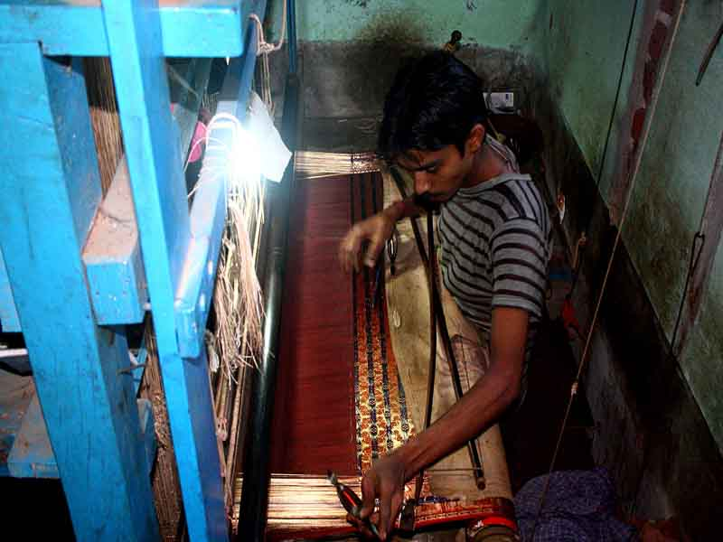

Bishnupur
Bishnupur
How To Reach
By Bus, road or train:
- By bus - Calcutta State Transport Corporation (CSTC) and South Bengal State Transport Corporation (SBSTC) buses ply regularly between Dharmatala/ Esplanade bus stand of and Bishnupur. It takes about 4-5 hours to reach Bishnupur.The road distance is shorter than the rail distance, it is about 150 km.
- By road - From Kolkata travel to Dankuni, take the Durgapur Expressway, at Ratanpur crossing turn left and take the Sheoraphuli-Tarakeswar road, go straight through to Arambagh and Bishnupur.
- By train - It takes about 3:30 to 4:15 hours from Kolkata, distance 201 km. Convenient connections - Rupashi Bangla Express departs from Santragachi at 6.25 am, Purulia Express departing Howrah at 4.50 pm and Siromoni Fast Passenger departs from howrah at 5.45pm andSantragachi-Porbandar Kaviguru Express Departs From Santragachi at 21.25hrs only sunday. and arrive at Bishnupur at 00.02hrs and Rajjyarani Tri weekly Express Departsfrom Shalimar at 6.40hrs and Aranyak Express departing Shalimar at 7.45 am. To come by Aranyak Express from Howrah to Bishnupur,1st one has to come at Santragachi by local train then by Aranyak Express.All these trains are via Kharagpur,Midnapur. You can also opt for Howrah-Chakradharpur passenger which leaves Howrah at 23:05 hrs. This train has sleeper class provision.
Other option, come at Kharagpur/Midnapur/Bardhman/Durgapur by train form Howrah.Then by bus.
One can also take a bus to Midnapore or Arambag and then change over to another local bus to Bishnupur which are more or less frequently available every 30 - 45 minutes. Arambag is about 3 hours and Midnapore about 3 1/2 hours by bus from Bishnupur.
The nearest commercial airport is at Kolkata.
From other places -
- By bus from Tarakeshwar
- By bus from Durgapur
- By train from Kharagpur
- By bus from Bardhman
- By train from Asansol
Get around
By cycle rickshaw because it is a small place. Many of the temples are near each other. Most are within walking distance of one another. Cars and auto-rickshaw are also available on hire.
See
Bishnupur being a temple town, the focus is on temples, all built of terracota during the reign of the Malla kings, who ruled over the area prior to the arrival of the British. Please note that Archaeological Survay of India (ASI) maintains most of the sites of Bishnupur. So it levies a minimum entry fee for the sites. The amountis Rs 5 for Indian citizens and Rs 100 (Probably) for foreigners. It also levies a fee for video photography (still photography is free). The good thing is that with a single ticket, one can visit all the sites of Bishnupur maintained by ASI. The counter is located near the entrance of Rash Mancha. So it is better to start from Rash Mancha. The sights other than temples are also listed below:
Temples
- Jorbangla Temple of Keshta Rai - Built by King Raghunath Singha Dev II in the 17th century. The ornate terracotta carvings are set off by the roof in the classic chala style of Bengal architecture.
- Nandalal Temple
- Radhamadhab Temple
- Kalachand Temple
- Radhagovinda Temple
- Sarbamangala
- Shyamrai Temple or Pancha Ratna Temple of Shyam Rai - Built in 1643 by King Raghunath Singha. The walls are richly decorated with terracotta carvings featuring aspects of Lord Krishna’s life. It is one of the largest temples.
- Krishna-Balaram Temple
- Mrinmoyee Temple
- Radhashyam Temple
- Madanmohan Temple- King Durjana Singh Deva built the temple in 1694 AD in the ekaratna style, a square flat-roofed building with carved cornices, surmounted by a pinnacle. Impressive carvings on the walls depict scenes from the Ramayana, Mahabharata and the Puranas.
Other places
- Rasmancha - Oldest brick structure. Built in 1587 by Bir Hambir is a pyramidal structure in the centre of the town, where the deities from the other temples are brought in a procession on the occasion of the Rasa Festival. There are some cannons of the Malla kings in the area.
- Dalmadal Caman - supposed to have protected Bishnupur when the Bargis (Maratha looters) attacked from the west.
- Lalbandh
- Gumgarh - the place of no return.
- Pathar Darja (Main Gateway of Bishnupur)
- Garh Darja (Small Gateway of Bishnupur)
- Stone Chariot
- Nutan Mahal
- The memorial of Shreenibas Acharya
Most of these awe inspiring and wonderful work of art in terracota have been lost out of sheer neglect, antique theft and vagaries of the weather over centuries. Some are protected and cared for now and protected as noticed. It is best to hire a rickshaw and go about visiting them as nearly all are within a diameter of 4 kms. Takes about 3 hours to see most of them. Ideal time to visit would be during the cooler climes as generally Bishnupur is a hot place and was pretty uncomfortable during a visit Aug '12 though there was moderately good rainfall.
What to Buy
- Bankura Horse- now the symbol of Indian handicrafts - available both in the terracota and wood versions.
- Baluchari Saris- another famous Bishnupur product. Traditionall woven with Ramayana and Mahabharata symbols but modern versions are also available.

- Conch shell beads and items.
- '"New Krishna Cloth Store'" Chawk Bazar Bishnupur, Collection Of Baluchari Sarees
There are plenty of shops you can walk into, but in case you are unable to locate one, here is a short guide: 1) Terracota Crafts, Dalmadal Road. 2) Shri Hari Sankha Bhandar, Shankharipara. 3) Maa Durga Sankha Bhandar, Shankharipara, 4) Silk Khadi Seva Mandlal in the Baltala area sells silks.
Eat
Bishnupur is a small town. One can find various small eateries in and around the temples as well as near the main bus stand. However, one should try Posto-r Bora, if you visit Bishnupur
You may also try various fried food like Chicken Chops, pakodas, several other "chops" made from potato, brinjal etc., chicken rolls, chow mein etc. which is good, filling and tasty as snacks in a small shop (of about 100 sq. ft/10 sq. mtr) on the right hand side, between Hotel Laxmi Park and SBI which is a 50 metre strip, just after you cross Hotel Monalisa keeping it to your left, near a crossing with traffic lights 30 metres off Jadubhatta Mancha (or auditorium); the quality of cooking medium used is good. Also promise you never forget the taste of Sweets Near Sibdas Girls school prepared from pure Ghee.
If you want a simple bengali lunch with posto bora, Hotel Monalisa is the place to go.
Where to Stay
- Hotel Laxmi Park with AC and Non AC Rooms (39 Room) @ 200,300,450,700,800,900,1100,1300,1800 as single, Double, three and four bed with a restaurant food as indian, chinese, tandur, with room service. ICICI Bank and SBI ATM available (3244) 256353/256377, +91 9474930666. Although the hotel has good infrastructure, the behavior of the staff leaves much to be desired. AC double bed rooms are starting from Rs 972, Rs 1080.
- Bishnupur Lodge (Tourist Lodge) of West Bengal Tourism (near rash mancha). Double bed,4 bed and dormitories available here.Rooms Rs. 600 and AC-1400, 2000. Dormitory Rs. 100. Contact +91 (3244) 252 013, +91(3244) 253 561, +91 9732100950.
- Monalisa Lodge Rs 250-500.+91 98310 31895. This is at a walking distance from the bus stand and roughly opposite SBI off Jadubhatta Mancha crossing.
- Hotel Bishnupur Rs. 200-500. Telephone +91 (3244) 252 243
- Bishnupur Lodge (private hotel) Rs. 200-500. Telephone +91 (3244) 253 749
- Meghmallar Rs. 200-500. Telephone +91 (3244) 252 258 is located bang on the bus stand.
- Pourasabha Parytakabas Re. 250-500. Telephone +91 (3244) 252 200
- Udayan Lodge College Road, Rs. 250-600 (3244) 252243. This is just beside the Government Tourist Lodge and is PROBABLY also known as Hotel Bishnupur if one is not mistaken
- Dev and Dev Lodge Balipara (Rabindra Statue) Contact - +919434392072
- Mallabhum Lodge Rasikgang(Near Bus Stand) Contact - +919434224896, Ph:-03244-252765
Some new lodges and hotels have come up/ are coming up near (about 150 metres away and towards the station on the main road from) the Government Tourist Lodge as seen in August 2012 and they are in the range of Rs. 200 - Rs. 500. The "Lodges" off the bus stand are usually economic staying places used mainly by touring professionals/sales representatives and may not always be suitable for families or a couple. One such lodge is Mallabhum Lodge, beside Meghamallar Lodge. They have no in house food kitchen system currently (Aug'12).
From the railway station the Government Tourist Lodge is about 3.5 kms (Rs. 35 - 40 rickshaw fare) and the bus stop is about 2 kms (Rs. 20 - 25 by rickshaw) as found in VIII/12.
Get out
- Bahulara - 25 km. from Bishnupur, it is famous for the Siddheswar Siva temple.
- Dihar – 10 kms from Bishnupur, it is famous for the Saileswar temple, about nine hundred years old.
- Panchmura – 22 kms from Bishnupur, the village where they make the famous terracotta horses.
- Jairambati and Kamarpukur - 43 km. from Vishnupur are Jairambati and Kamarpukur, birthplaces of Sri Ma Saradamoui and Sri Ramakrishna Pramahansa. Near Kamarpukur is the historic Garh Mandaran, made famous by Bankim Chandra chatterjee.
- Mukutmanipur - about 83 km from Bishnupur, by the side of the river Kangsabati. The main attraction is the dam across the river and the hilly landscape. Places of stay: Tourist Lodge and a Youth Hostel and a private hotel. Hotel Amravati and Shonajhuri are two more hotels there.
- Bankura - 30 km from Vishnupur, the district headquarters town.
- Susunia Pahar - one of the important hills in the district, rising abruptly from the neighbouring plains to a height of 44 metres. Stone inscriptions of Chandravarma, a 4th century king, have been discovered here. From Bankura on the Bankura-Purulia road, one has to alight at Chhatna on the 13th km. Susunia is 7 km. north of Chhatna.
- Biharinath